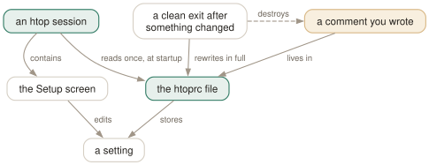

Day 09
Setup and htoprc
The five Setup categories, the file they write — and how to stop htop overwriting your work.
By the end of today you can
- navigate all five Setup categories and know which one owns which decision
- state the exact rule for when htop rewrites your config file, and name two defences
- hand-write an htoprc that does what you meant, including the trap that silently ignores half of it
Setup is an editor for one file
Everything you have toggled for eight days lives in a single file, and the Setup screen is nothing but an editor for it. Understanding that one sentence makes both halves easier — and explains why htop will cheerfully overwrite anything you write there by hand.
F2 opens it, and so do S and C — the last of which appears in htop's help screen and nowhere in the manual page. F10 leaves. The left-hand pane lists five categories, and the division between them is worth memorising because it is the map of every decision htop offers you.

The five categories
- Display options
- About thirty toggles, split into per-screen and global. This is where
detailed_cpu_timelives, along with kernel and userland thread hiding, program paths, merged commands, the tree-stability modes from Day 5, CPU temperature and frequency, SMT labelling, and the mouse. - Header layout
- Fourteen presets from one full-width column to four equal ones, including asymmetric splits like 33/67 and 40/20/40.
- Meters
- The header, built by hand: a pane per column, plus the “Available meters” list from Day 8. Space adds, and cycling a meter changes its bar/text/graph/LED mode.
- Screens
- The named tabs —
MainandI/Oby default — each with its own Active Columns list chosen from Available Columns. All of Day 10 and Day 11 happen in this pane. - Colors
- Eight schemes:
Default,Monochromatic,Black on White,Light Terminal,MC,Black Night,Broken GrayandNord.
Categories Display options
Display options For current screen tab: Main
Header layout [ ] Tree view
Meters [0] - Tree view is kept visually stable (0 - off, 1 - soft, 2 - hard)
Screens Global options:
Colors [x] Show tabs for screens
[x] Hide kernel threads
[ ] Detailed CPU time (System/IO-Wait/Hard-IRQ/Soft-IRQ/Steal/Guest)
[x] Enable the mouse
F1 F2 F3 F4 F5 F6 F7 F8 F9 F10Done
The file, and when htop rewrites it
The file is ~/.config/htop/htoprc. If there is no user file, htop reads /etc/htoprc; if that is absent too, it uses hard-coded defaults. $HTOPRC overrides the path entirely.
It opens with a warning that is more accurate than the manual page:
# Beware! This file is rewritten by htop when settings are changed in the interface.
# The parser is also very primitive, and not human-friendly.
The precise rule, which is worth knowing exactly because two of the three clauses are surprising:
- htop rewrites the file on a clean exit — q or F10. Exit by signal, by closing the terminal, by Ctrl-C, and nothing is written.
- …but only if some setting actually changed during that session. A session in which you only looked at things leaves the file exactly as it was, comments and all.
- …and “setting” means any setting, not just ones you changed in Setup. Pressing t, K or I on the main screen is enough to trigger a full rewrite.
Two defences
If you want the file to be yours rather than htop's, pick one.
chmod 444- Make it read-only. htop starts normally, reads it, lets you toggle things for the session, and the write at exit fails — silently, with no error and no warning. Your file is intact. You have traded the ability to save from Setup for the ability to keep comments, which is the right trade once a config is settled.
$HTOPRC- Point htop at a different file per machine, which is the use the manual page suggests for shared home directories. Note that if the file named by
$HTOPRCdoes not exist, htop uses its built-in defaults and creates nothing — it does not fall back to~/.config/htop/htoprc.
$ chmod 444 ~/.config/htop/htoprc # the file is now yours
$ HTOPRC=~/.config/htop/buildbox htop # a separate config for one machine
Writing it by hand, and the trap
The format is one key=value per line, with per-screen settings written as .-prefixed lines immediately following their screen: line. Comments start with # and are preserved right up until the next rewrite.
“Very primitive” in that banner means the parser reports nothing, ever. An invented key is ignored. An unknown column name is dropped from the list. A meter that does not exist renders as nothing. delay=notanumber is accepted. There is no syntax check and no startup warning — if a hand-written config does not do what you meant, the only feedback is the screen.
fields=0 48 46 1 # PID USER PERCENT_CPU Command -- this wins
screen:Main=PID USER NICE Command # ...and this is silently ignored
Today's habit
Start the file. Everything below is a line you now have a reason for, and every day from here adds a few more — by Day 14 you will have a config you can defend line by line, which is a different thing entirely from a config you copied.
Put it somewhere you back up. htop will overwrite it the first time you press a toggle and quit, and the only real protection against that is a copy somewhere else — plus chmod 444 once you are happy with it.
Tomorrow: the seventy-column catalogue, and how to choose from it.
New vocabulary
Keys
| Key | Does |
|---|---|
| F2SC | Open Setup. C is an alias the manual page does not mention. |
| F10 | Leave Setup. Labelled Done. |
| Space | In Setup: toggle the highlighted option, or add the highlighted meter. |
Commands
| Command | Does |
|---|---|
HTOPRC=~/x htop | Read (and write) a different config file. One config per machine, one shared home directory. |
chmod 444 ~/.config/htop/htoprc | Make the file read-only. htop then runs normally and stops clobbering it. |
Options
| Option | Does |
|---|---|
highlight_changes | Highlight processes that are new or whose command line changed. Default off. |
highlight_changes_delay_secs | How long that highlight lasts. Default 5. |
enable_mouse | Let htop capture mouse events. Default on, which costs you terminal text selection. |
header_margin | Leave a blank line around the header. Default on. |
screen_tabs | Show the names of screen tabs above the list. Default on. |
fields | The legacy numeric column list. Silently overrides every screen: line. |
Today's configappend to ~/.config/htop/htoprc
Highlight processes that have just appeared, or whose command line has changed, for five seconds. Off by default, and the single most useful thing in the Setup screen: it turns 'something keeps restarting' from a hunch into something you can see. Costs nothing when nothing is changing.
highlight_changes=1
highlight_changes_delay_secs=5
Give the terminal back its text selection. With the mouse enabled htop captures drag events, so selecting a PID to copy selects nothing and clicks a column header instead. Turn this off if you copy things out of htop more often than you click inside it; leave it on if the reverse is true.
enable_mouse=0
Reclaim the blank line above the meters. One line of a 24-line terminal is one more process visible, and the margin is decoration.
header_margin=0
A header that does not grow with the core count. The default puts one bar per CPU up there, which is four lines on a laptop and thirty-five on a build machine; the combined 'CPU' meter is one line on all of them. Left column as bars for shape at a glance, right column as text for numbers you can read off. Modes: 1 bar, 2 text, 3 graph, 4 LED.
header_layout=two_50_50
column_meters_0=CPU Memory Swap
column_meter_modes_0=1 1 1
column_meters_1=Tasks LoadAverage Uptime Clock
column_meter_modes_1=2 2 2 2
Show the tab bar naming each screen. Day 11 adds screens beyond the default two, and without this line there is nothing on screen to tell you which one you are looking at or that the others exist.
screen_tabs=1
htop reads this file once, at startup, and there is no reload key: quit and start it again. Note that htop rewrites the file — comments and all — on a clean exit from any session in which you changed a setting.
Drillsdo these in a real terminal, today
Self-check
Answer out loud first, then unfold.
You carefully hand-write an htoprc with comments explaining every line. A week later the comments are gone and the file is unrecognisable. You never opened Setup. What happened?
You pressed a toggle — t for tree view, K for kernel threads, I to invert a sort — and then quit cleanly. htop rewrites the whole file whenever a session ends cleanly and something changed, and ordinary main-screen toggles count as changes. The rewrite emits htop's own canonical form: every setting, no comments.
The manual page says the file “is overwritten upon clean exit by htop's in-program Setup configuration”, which reads as though only Setup triggers it. In htop 3.5.3 the trigger is any changed setting, from anywhere. The good news hidden in the same rule: if nothing changed, nothing is rewritten — a config you only ever read survives untouched.
You edit screen:Main= in your htoprc to add a column. htop ignores it completely. The syntax is correct and the column name is valid. What else is in the file?
A fields= line — the legacy numeric column list, which htop writes into every config it generates and which silently takes precedence over screen:Main= regardless of which appears first. Your names are parsed and then thrown away in favour of a list of integers.
Delete the fields= line and the screen: line takes effect. Note that htop will write it back the next time it rewrites the file, so this is one more reason for the read-only defence. Nothing in the manual page mentions fields= at all.
You set HTOPRC=~/.config/htop/server.htoprc and the file does not exist yet. What does htop use?
Its hard-coded defaults, and it does not create the file. In particular it does not fall back to ~/.config/htop/htoprc — setting $HTOPRC replaces the search entirely rather than adding a candidate to it.
That is exactly what you want for the use case the manual page suggests: one home directory shared across machines, a different $HTOPRC per machine, and no accidental bleed between them. It is a surprise the first time you assume a fallback and get a default-looking htop instead.
Between chmod 444 and a per-machine $HTOPRC, which should you use?
Read-only when the file is the authority — you keep it in a dotfiles repository, you want it identical everywhere, and you want htop to stop having opinions. htop notices nothing: it runs normally, your toggles work for the session, and the write at exit fails silently. You lose the ability to save changes from Setup, which is the point.
A separate $HTOPRC when different machines genuinely want different configs — a laptop and a 64-core build box do not want the same header. Then let htop own each file normally and configure through Setup, which is the workflow htop is designed around.
Using both is reasonable: a read-only shared base on your workstations, and a writable per-machine file on servers you tune in place.
Cheat sheet
F2 S C open Setup F10 leave it Space toggle / add
categories: Display options | Header layout | Meters | Screens | Colors
file: ~/.config/htop/htoprc
then: /etc/htoprc, then hard-coded defaults
$HTOPRC replaces the search outright -- NO fallback if the file is missing
REWRITE RULE: clean exit AND some setting changed -> whole file regenerated,
every comment lost. 't', 'K' and 'I' count as changes.
Nothing changed -> file untouched. Killed by a signal -> untouched.
chmod 444 ~/.config/htop/htoprc # htop stops clobbering it, silently
HTOPRC=~/.config/htop/box2 htop # one config per machine
TRAP: 'fields=' (numeric, legacy) beats 'screen:Main=' (names), whatever the order.
Delete the fields= line or your column edits do nothing.
The parser never reports an error: unknown keys, unknown column names, unknown meters and delay=notanumber are all accepted in silence. The only feedback a hand-written config gives you is what appears on screen.
Everything through Day 09
Keys
| Key | Does |
|---|---|
| Ctrl-L | Redraw the screen and recalculate, without waiting for the next tick. |
| Z | Pause and resume sampling. The screen freezes; the machine does not. |
| F10q | Quit. This is also the only exit that saves your settings. |
| UpDown | Move the selection one row. Alt-k and Alt-j do the same. |
| PgUpPgDn | Move the selection a screenful at a time. |
| HomeEnd | Jump to the first or the last process in the list. |
| LeftRight | Scroll the whole list sideways. Also Alt-h and Alt-l. |
| Ctrl-A^ | Scroll back to the start of the selected process's line. |
| Ctrl-E$ | Scroll to the end of the selected process's line. |
| Alt-UpAlt-Down | Pan the view without moving the selection. Shift-Up/Shift-Down too, if your terminal lets them through. |
| p | Toggle full program paths in Command. |
| m | Toggle merging exe, comm and cmdline into Command. |
| F3/ | Incremental search: move the selection to the next match. Does not hide anything. |
| F3 | While searching: jump to the next match. Shift-F3 goes backwards. |
| F4\ | Incremental filter: hide every row that does not match. |
| Enter | In the filter prompt: keep the filter and put the prompt away. |
| Esc | In the filter prompt: clear the filter. In search: cancel it. |
| u | Open the user menu and show only one user's processes. |
| Digits | Type a PID and the selection jumps to it. Silently — there is no prompt. |
| F6><. | Open the “Sort by” menu. All three punctuation aliases work. |
| I | Invert the sort direction. The arrow in the heading flips. |
| NPMT | Sort by PID, CPU%, MEM% and TIME. The top(1) compatibility keys. |
| F5t | Toggle tree view. The F5 label changes to List while you are in it. |
| +- | Expand or collapse the selected subtree. |
| * | Expand or collapse every subtree at once. |
| F | Follow: pin the selection to this process wherever it moves. |
| Space | Tag or untag the selected process. Tagged rows stay tagged until you clear them. |
| c | Tag the selected process and all of its children. |
| U | Untag everything. The most important key on this page. |
| F9k | Open the signal menu. Defaults to 15 SIGTERM. |
| F7] | Raise priority — lower the nice value. Root only. |
| F8[ | Lower priority — raise the nice value. Anyone can do this to their own. |
| } | Raise the autogroup priority. Shift-F7. Root only. |
| { | Lower the autogroup priority. Shift-F8. |
| a | Set CPU affinity: tick the CPUs this process may run on. |
| i | Set the I/O scheduling class and priority. Not in the manual page. |
| Y | Set the scheduling policy. Not in the manual page either. |
| l | List open files, by running lsof against the selected process. |
| s | Trace system calls, by running strace against it. |
| e | Show the process's environment. Not in the manual page. |
| w | Show the command line wrapped across the whole screen. |
| x | Show the process's active file locks. |
| b | Show a backtrace. Only if htop was compiled with it, which it usually was not. |
| F5 | Refresh the open screen. F3 and F4 search and filter it. |
| F8 | In the strace screen: toggle auto-scroll. F9 stops the trace. |
| # | Hide and show the header meters entirely. Not in the manual page. |
| F2SC | Open Setup, where meters are chosen. C is an undocumented alias. |
| F2SC | Open Setup. C is an alias the manual page does not mention. |
| F10 | Leave Setup. Labelled Done. |
| Space | In Setup: toggle the highlighted option, or add the highlighted meter. |
Commands
| Command | Does |
|---|---|
htop | Start htop, reading ~/.config/htop/htoprc once at startup. |
htop -d 10 | Sample every 10 tenths of a second. Clamped to the range 1–100. |
htop -n 5 | Draw five frames, then exit on its own. Absent from the manual page. |
htop -V | Print the version. The -v in the SYNOPSIS does not exist. |
htop -F chrome | Start with the filter already applied. Multiple terms: -F 'nginx|php'. |
htop -p 1,843 | Show only these PIDs, and nothing else ever appears. |
htop -u | Show only your own processes. |
htop -u postgres | Show one user's processes. A numeric UID works too. |
htop -s PERCENT_MEM | Start sorted by a column. Forces list view. |
htop -s PERCENT_MEM -t | Sorted and in tree view — the one way to have both. |
htop --sort-key help | Print every sortable column name and what it means. |
htop -t=soft | Tree view with a stable cursor line. classic, soft and hard, or 0/1/2. |
htop --readonly | Disable every process- and system-changing feature for this session. |
htop --no-meters | Start with the header hidden. Gives the process list the whole terminal. |
htop -C | Monochrome. The bar segments become bold, normal and dim instead of colours. |
htop -U | ASCII instead of unicode for the graph meters. |
HTOPRC=~/x htop | Read (and write) a different config file. One config per machine, one shared home directory. |
chmod 444 ~/.config/htop/htoprc | Make the file read-only. htop then runs normally and stops clobbering it. |
Options
| Option | Does |
|---|---|
delay | Tenths of a second between samples in htoprc. Default 15, i.e. 1.5 s. |
M_VIRT | Address space the process has mapped. VIRT. Mostly promises, not memory. |
M_RESIDENT | Pages actually in RAM, shared ones counted in full. RES. |
M_SHARE | The part of RES that other processes also map. SHR. |
M_PRIV | Resident minus shared — what dies with the process. PRIV, a default column. |
M_SWAP | Pages of this process pushed out to swap. SWAP. |
M_PSS | Resident, but each shared page divided by its number of sharers. PSS. |
M_PSSWP | The same proportional treatment for swapped-out pages. PSSWP. |
M_EPSS | PSS plus PSSWP: the whole footprint, proportionally. EPSS. |
PERCENT_MEM | RES as a share of total RAM. MEM% — and it inherits RES's double counting. |
detailed_cpu_time | Split the CPU bar into irq, soft-irq, steal, guest and io-wait. Default off. |
header_layout | One to four columns, in fourteen width presets. Default two_50_50. |
column_meters_0 | The meters in the first header column, space-separated. |
column_meter_modes_0 | Their display modes: 1 bar, 2 text, 3 graph, 4 LED. |
highlight_changes | Highlight processes that are new or whose command line changed. Default off. |
highlight_changes_delay_secs | How long that highlight lasts. Default 5. |
enable_mouse | Let htop capture mouse events. Default on, which costs you terminal text selection. |
header_margin | Leave a blank line around the header. Default on. |
screen_tabs | Show the names of screen tabs above the list. Default on. |
fields | The legacy numeric column list. Silently overrides every screen: line. |